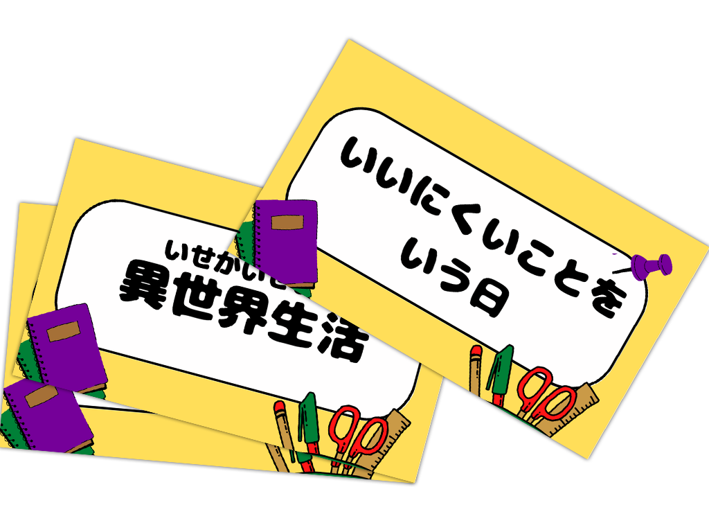
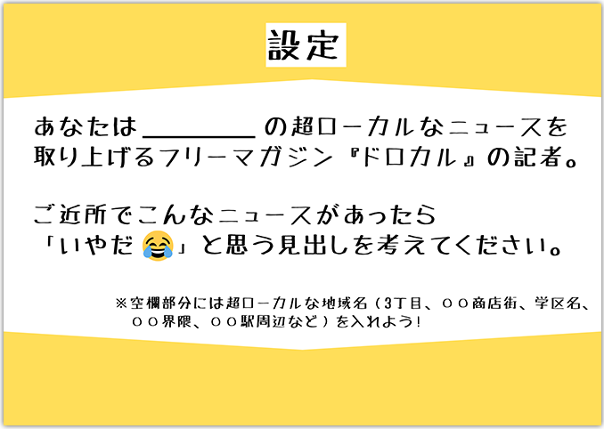
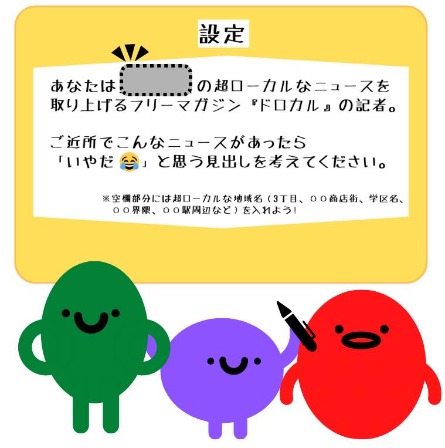
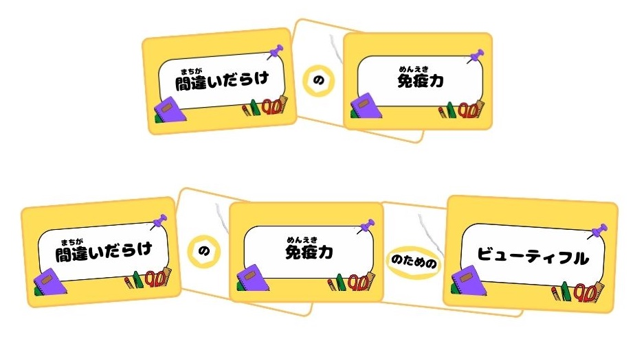
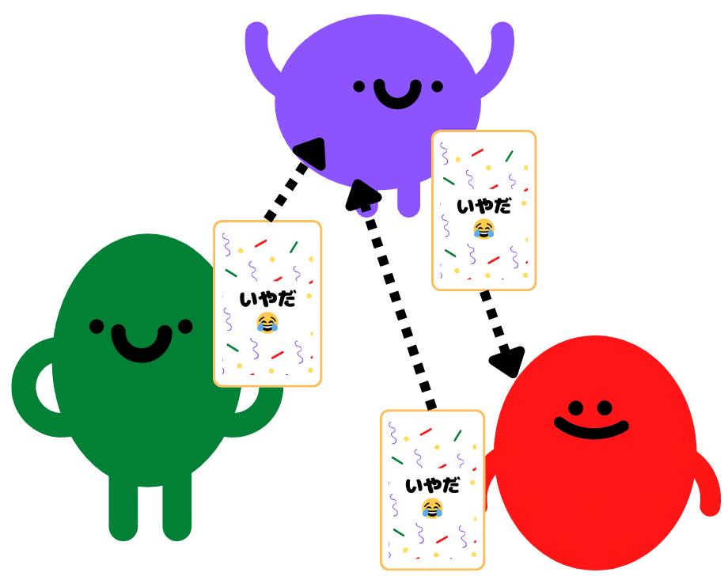

アイテム
見出しカード

超ローカルニュース『ドロカル』の記事の見出しが掲載されているカード。マジックで消している部分をキーワードカードで埋めよう。カードデータには見出しカード60枚。
キーワードカード
記事の見出しカードの空白の穴埋めに使えるキーワードが書いてある。カードデータにはキーワードカード150枚。
つなげるカード

キーワードカードを複数つなげたい時に使うカード。2枚1組。
いやだ（笑）カード

他のプレイヤーが選んだキーワードの中で一番「いやだ（笑）」と思って笑えたものに出すカード
設定用紙
空欄にあなたの超ローカルなまちの名前を書いてプレイヤーの見える位置に貼ろう。
遊び方
1 設定用紙にまちの名前を記入してみんなの見えるところに置く
自分たちの徒歩15分のまち、 超ローカルなエリアの名前を書いて、みんなの見えるところに置く。

2 キーワードカードを配る
他のプレイヤーに見えないように「キーワードカード」を5枚ずつ配る
※オプションルールは、ドロカルに慣れない方や初めて遊ぶときにお勧めのルールです。
（オプションルール1）キーワードカードを引き直す
もし手札となったキーワードカードに使いたいキーワードがなかったら、キーワードカードを山札から選び直す。キーワードカードの交換を何枚まで認めるかは、プレイヤーの話し合い！
（オプションルール2） キーワードカードを全部広げて選ぶ
キーワードカードをかるたの札のように全部広げて、その中から選ぶ。表にして広げて選んでも、裏返して広げて運任せにして選ぶのもアリ！
3 つなげるカードを配る
「つなげるカード」は2種類あるので、それぞれ1枚ずつ、合計2枚配る
4 いやだ（笑）カードを配る
「いやだ（笑）カード」は3枚ずつ配る。
5 順番を決める
「見出しカード」をめくる順番を決める。
「見出しカード」は誰が引いてもOK！順番を決めておくと進めやすい
6 見出しカードを真ん中にスタンバイ
「見出しカード」を束にして、裏返して山として中央に置て、1枚だけ表にする。
ここからゲームスタート!
7 手持ちのキーワードカードから選んで出す
プレイヤーはその「見出しカード」の黒塗り部分（ブラックアウト）にふさわしいワードを自分が持っている「キーワードカード」の中から選んで出す。
「つなげるカード」でキーワードを複数つなげた言葉にしてもOK!
「つなげるカード」は繰り返し使えるぞ！

8 順番に選んだキーワードと一緒に見出しを読み上げる
「見出しカード」の黒塗り部分にキーワードを入れて完成させた見出しを他のプレイヤーに伝える。
9 いやだ（笑）カードを使って投票
いちばん「いやだ(笑) 」「気に入った！」「面白い！」と感じた見出しを作ったプレーヤーに「いやだ（笑） カード」を渡す。

3巡する
使用した「キーワードカード」は手札から除外する。
「6. 見出しカードを1枚めくってスタート」に戻って3回戦までプレイする。
3巡するまでに各プレーヤーは手持ちのキーワードカード5枚を使い切る。
最後に各プレーヤーが手に入れた「いやだ（笑い）カード」を数え、一番多くの「いやだ（笑）カード」を集めた人が勝ち！
if 「いやだ（笑）カード」を一番多く集めたものが複数いる場合
「いやだ（笑）カード」を一番多く集めたものが複数いる場合は、上位者のみでサドンデス！
ドロカルの入手方法
以下からカードゲームのデータ（PDF形式のファイル）をダウンロードしてプリントアウトしてプレイしてください。名刺用紙バージョン（100円ショップなどで販売している名刺用紙）とA4用紙バージョン（A4用紙に打ち出して裁断。OA用紙でも遊べます。）があります。